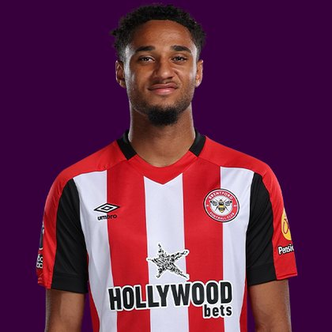

PITCHKEEP
Premier League ranks
Player File · MID BRE · Premier #86

Kevin Schade
MID · Brentford · age 24 · £6.0m
2025/26 Premier League
| Year | Starts | Min | G | A | xG | xA | CS | GC | Bonus | YC | Sleeper | FPL |
|---|---|---|---|---|---|---|---|---|---|---|---|---|
| 2025/26 | 32 | 2744 | 8 | 5 | 12.08 | 2.05 | 11 | 34 | 5 | 6 | 153.6 | 125 |
Plus
- 153.6 Sleeper BPL 2025 points (Pitch #59).
- 8 goals, 5 assists - enough attacking return to live on a 400.
- Penalty order #2.
- 8 goals on 12.08 xG - the shots were better than the box score.
Minus
- Consensus 81.67 vs Sleeper #59 - the industry is cooler than last year's box score.
- Board spread 13–131 (FPL xGI to FPL EP Next).
PitchKeep Take · The Premier
Kevin Schade is a midfielder for Brentford, age 24, £6.0m. The Premier ranks him 86th overall by splitting Sleeper BPL 2025 (#59, 153.6 points) with the consensus of 3 other boards (81.67). Last year's Sleeper line ran 23 spots ahead of the expert/FPL mix. The third list keeps some of that production bump and refuses to throw the other boards out. That is the whole point of not just republishing The Pitch.
The 2025/26 Premier League line is 32 starts and 2744 minutes, 8 goals and 5 assists, 42 tackles and 54 CBI. Official FPL scored it at 125 points (3.6 per match) with 5 bonus. Sleeper's table turned the same counting stats into 153.6. Midfielders get 9 a goal, 6 an assist, and 1 a clean sheet, plus a full tackle/CBI stream. That is why a six who plays every week can outrank a ten-goal winger who sits.
Underlying: 12.08 xG, 2.05 xA, 14.13 xGI. He finished -4.1 above expected goals and 3.0 above expected assists. Set pieces: penalty order #2 for Brentford. Role at Brentford is the 2026/27 question sitting under the 2025/26 number. 32 starts is a starter. Anything under 25 starts is a rotation warning we already priced. Minutes are the skill that survives a finishing regression. The friendliest board is FPL xGI at 13; the coldest is FPL EP Next at 131.
Market: £6.0m, 11 boards on the file. Price is the FPL tax, not the rank. The Premier is who produced and who the boards still believe. FPL's own EP-next is 2.1. ICT 172.8.
Instruction: deep-league starter, shallow-league watchlist. The 2025/26 line got him onto the 400. A role change gets him off it. Watch minutes, not vibes. Nearby on The Premier: James Trafford, Adam Wharton, Robin Roefs. Versus The Pitch (Sleeper-only #59), the hybrid moves him down to #86. That move is the third list doing its job.
He is 24, which on this board is neither a dart nor a warning label. Prime-age midfielders get ranked on what they just did and whether Brentford still gives them the ball. 2744 minutes says yes. The 2026/27 FPL price (£6.0m) is the app's guess at whether that continues. The Premier is the blend of that guess and the box score.
Attacking midfielders with 13 goal involvements are how Sleeper and FPL finally speak the same language. The remaining argument is defensive events (42 tackles, 54 CBI) and whether Brentford keeps him on set pieces. If both hold, this ranking is a floor. If either dies, he slides toward the pure-creator band and the tackle-heavy sixes climb over him. Watch the first six gameweeks of 2026/27 for the tell.
How to use the file: The Pitch is the Sleeper-only 400 (he is #59 there). The Premier is the 50/50 with every other board we track. Attack, Midfield, Defence, and Keepers re-rank the same Sleeper table by position. BK Value on this page follows The Premier when you are on the hybrid calculator and The Pitch when you are on the Sleeper calculator. Same curve either way - 12,000 at 1.01. 6 yellows are a real Sleeper tax. Unranked sources are skipped, never treated as 999, which is why a player missing from Yahoo's XI is not secretly ranked 400th.
Sleeper vs FPL
Same 2025/26 line, two scoring tables
Board graph
Spread 13–131 · 11 sources
Tape · 2025/26 Premier League
Chelsea vs Brentford 0-1 Kevin Schade Goal 🤯 | HIGHLIGHTS | Premier League 2025/26
Every Board
Spread 13–131 · 11 sources
| Source | Rank |
|---|---|
| FPL xGI | 13 |
| FPL ICT Index | 33 |
| Sleeper BPL 2025 | 59 |
| FPL 2025/26 Points | 65 |
| RotoWire Fantrax / Sleeper 400 | 67 |
| FPL Price Board | 68 |
| RotoWire FPL 400 | 86 |
| FPL Ownership | 88 |
| RotoWire GW1 | 92 |
| FPL Form | 98 |
| FPL EP Next | 131 |
PK News
All players · The Premier · The Pitch · PK News · Calculator